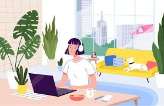

Remote internships are becoming an increasingly popular way for students and recent graduates to gain hands-on experience from anywhere in the world. With just a laptop and internet connection, interns can work on real-world projects, communicate with professional teams, and contribute meaningfully to organizations—without the need to commute or relocate. This flexibility makes remote internships ideal for those juggling studies, part-time jobs, or personal responsibilities. Whether you're exploring a new career path or seeking experience in your field of study, remote internships can offer meaningful growth, professional networking, and a strong foundation for your future career. Beyond convenience, remote internships help develop essential 21st-century skills such as time management, digital collaboration, and self-motivation. Interns learn how to work independently while still being part of a structured team environment. They gain exposure to tools commonly used in remote workspaces, such as project management platforms, video conferencing, and cloud-based file sharing. By the end of the internship, participants not only build their resumes but also prepare themselves for the modern, remote-friendly workforce.
